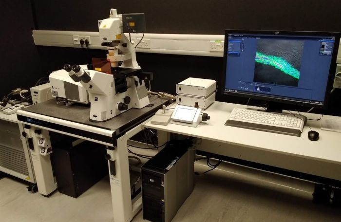

This laser scanning
confocal microscope with 34 detection channels (32-GaAsP array and 2
PMTs) allows fast spectral imaging (whole spectrum recorded in a single
scan). The motorised stage allows multi-position time-lapse imaging or
tile scans of large samples. A heated stage top chamber is available
upon request.

Available
techniques:
- Laser scanning microscopy (LSM) confocal imaging
- Fast spectral imaging and linear spectral unmixing
- Fluorescence recovery after photobleaching (FRAP)
Objectives:
- Plan-Apochromat 20x/0.8 dry, FWD 0.55 mm, CG 0.17 mm (DIC)
- LD Plan-Neofluar 20x/0.4 dry, FWD 7.4-8.4 mm, CG 0-1.5 mm (DIC)
- LD Plan-Neofluar 40x/0.6 dry, FWD 2.5-3.3 mm, CG 0-1.5 mm
- Plan-Apochromat 40x/1.3 oil, FWD 0.21 mm, CG 0.17 mm (DIC)
- Plan-Apochromat 63x/1.4 oil, FWD 0.19 mm, CG 0.17 mm (DIC)
- Plan-Apochromat 100x/1.4 oil, FWD 0.17 mm, CG 0.17 mm
[FWD = free working distance, CG = cover glass]
Fluorescence
excitation sources:
LSM 780 laser lines (power at sample):
- 405 nm, 458 nm, 488 nm, 514 nm, 561 nm, 633 nm
Epifluorescence:
- X-Cite mercury metal halide lamp
Filter sets and
dichroics:
LSM 780 dichroics:
- 405 nm; 445 nm; 458 nm; 458/514 nm; 458/561 nm; 488 nm; 488/561 nm;
488/561/633 nm; T80/R20 partially reflective mirror
Detectors and
cameras:
- 32-GaAsP spectral array (410 - 695 nm)
- 2 PMTs
- Transmitted light PMT
Software:
Other features:
| Usage fees* [SGD/hour] |
Academia |
Industry |
| 30 |
60 |
| Location |
ABIF, SCELSE, B2 (SBS-B2n-27P.1) |
| Safety Notice |
Requires N3 laser license
(N2/04107/0169) |
| Contact |
abif@e.ntu.edu.sg;
nobic.facilities@e.ntu.edu.sg |
* Long-term discounts of 75% and 95% apply after 8 and 24 hours of
continuous usage, respectively.
BACK TO TOP